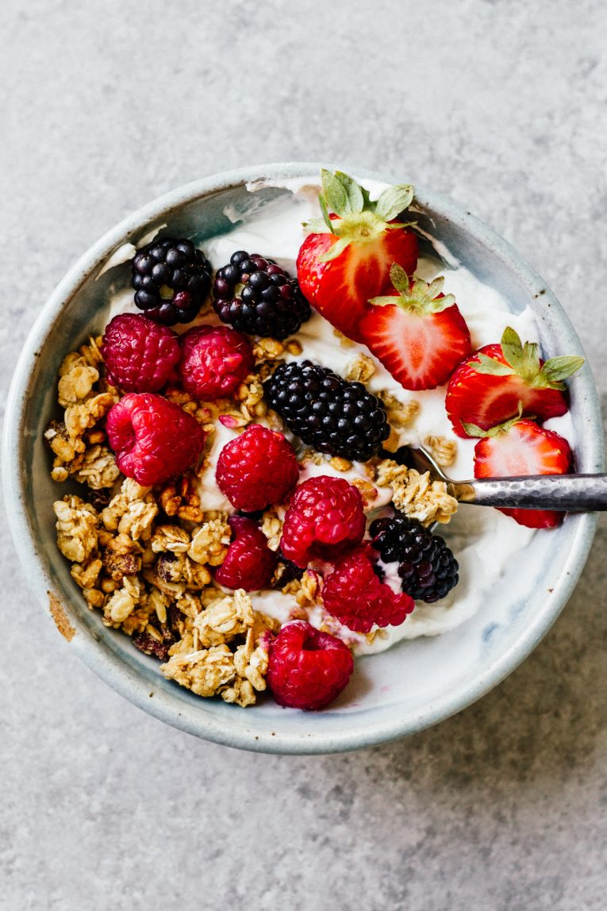

Fruit Bowl

Fruit Bowl
Because every morning needs to start off with a bang! And these Granola & Yogurt Bowls do just that. So yummy, so delicious, and they each only take about 5 minutes to make!
Description
- Greek Yogurt
- Banana
- Raspberry
- Blueberry
- Chia Seeds
Steps
- Slice up the fruits
- Fill the bowl with yogurt
- Top with desired fruits
- Garnish with chia seeds